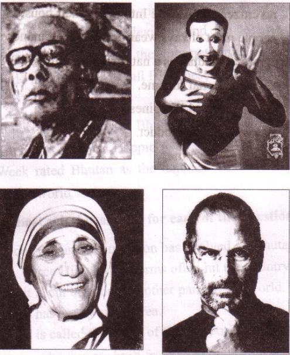
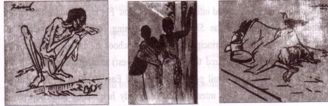
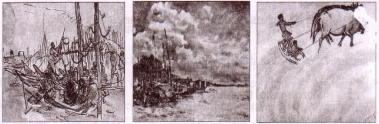
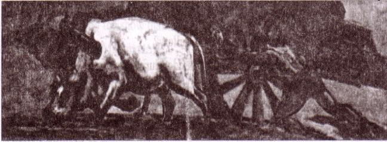

Unit Seven
People who stand out

After we have studied this unit, we will be able to
-
read and understand texts through silent reading.
-
ask and answer questions
-
listen to a text for specific information.
-
Write a dialogue
Lesson l: Zainul Abedin, the great artist
-
A. Read the text and answer the questions that follow.
The pioneer of Bangladeshi modern art Zainul Abedin is widely acclaimed for his Bengal `Famine Sketches'. Through a series of sketches, Zainul not only documented the harsh famine of 1940 but also showed its sinister face through the skeletal figures of the people destined to die of starvation in a man-made plight. He depicted these extremely shocking pictures with human compassion. He made his own ink by burning charcoal and using cheap ordinary packing paper for sketching. He produced a series of brush and ink drawings, which later became iconic images of human sufferings.
Zainul developed a knack for drawing and painting when he was a high school student. After completing high school, he got admission to the Government School of Art, Calcutta (now Kolkata). He graduated with the first position in first class in 1938. He was appointed teacher of the Art School while he was still a student there. He also attended the Slade School of Arts, London in 1951-52.
Zainul Abedin is considered the founding father of Bangladeshi art. He was an artist of outstanding talent and earned international reputation. For his artistic and visionary qualities, he is referred to as Shilpacharya meaning `great teacher of art' in Bangladesh. He was the first Principal of the first art school in Dhaka in East Pakistan (now Bangladesh). He organized the Nabanna (harvest) exhibition in 1969. In the exhibition, a 65-foot long scroll portraying the rural East Pakistan in phases from abundance to poverty. This intensified the already heightened non-cooperation movement against the Pakistan regime. The exhibition was symbolic of the artists' protest and a milestone in demanding cultural and political freedom. Zainul's dynamic style of work is evident in a 30 foot long scroll painting called Manpura, which was done to commemorate the death of hundreds and thousands of people in the devastating cyclone of 1970.
84He designed the pages of Constitution of Bangladesh. He founded the Folk Art Museum at Sonargoan, and also Zainul Abedin Shangrahasala, a gallery of his own works in Mymensingh in 1975.
The river Brahmaputra played a vital role in his paintings and was a source of inspiration all through his career. Much of his childhood was spent near the scenic beauty of the river Brahmaputra. A series of water colours that Zainul did as his tribute to the river earned him the Governor's Gold Medal in an all-India exhibition in 1938. This was the first time when he came into spotlight and this award gave him the confidence to create his own visual style.
Zainul was born in Kishoreganj on 29 December 1914 and died on 28 May 1976.
[adapted from The Daily Star: Thursday July 16, 2012]
Questions
1. Write in detail how Zainul Abedin portrayed the sufferings of people.
2. What influence did the river Brahmaputra have on Zainul Abedin? How did he show this influence in his works?
3. What did these works earn him later in his life?
4. How did his art help to intensify the noncooperation movement?
B . Look at the series of pictures. Work in groups and talk about them. Now briefly write about what each picture portrays.

|
Picture 1 |
Picture 2 |
Picture 3 |

|
Picture 4 |
Picture 5 |
Picture 6 |

|
Picture 7 |
D . Listen to the CD/teacher and tick the word/s you hear.
|
Listening text: 4 |
1. The US Ambassador to Bangladesh considers Zainul Abedin a
a. great painter.
b. popular painter.
c. master painter.
d. unique painter.
2. Zainul's art gallery was set up in [dash]
a . 1972.
b . 1973.
c . 1974.
d. 1975.
3. The number of Zainul's artworks preserved in the gallery is --------
a . 53.
b. 62.
c . 65.
d. 75.
864. The US Ambassador commented that the museum is a global
a . wealth.
b. asset.
c . gift.
d. treasure.
5. Mozena visited the gallery for
a. 3 hours.
b. 2 hours.
c. 1 hour.
d. 1/2 hour.
D . Listen to the text again and answer the questions.
1 .Where is Zainul's art gallery situated?
2 .When did the Ambassador visit the gallery?
3. Who else were there with the Ambassador during his visit?
-
.Which artworks of Zainul did the Ambassador specially mention?
-
How did Mozena feel after visiting the gallery?
Lesson 2: The art of silence

A . Look at the above pictures of Partha Pratim Majumder. Work in pairs and discuss the following questions.
1. What is Partha Pratim Majumder doing in the two pictures?
2. Describe his facial expressions.
3. Describe his physical features i.e. his age, how he looks, what he is wearing, his hair style, etc.
Now write a short description of Partha Pratim Majumder.
87B . Read the text and choose the correct answer.
In the primitive age communications took place between humans through signs and gestures. As humans began to use their vocal chords, these silent gestures were no longer used as the primary means of communication. But they did not completely disappear. They evolved as a form of art, used to entertain thousands, and came to be Known as 'mime'.
Mime touched a little boy's heart while he was watching a performance in his village. He was so fascinated by the show that he was determined to master this art. He is no other than Partha Pratim Majumder.
partha is undoubtedly a forerunner in the field of mime in Bangladesh. He started as a musician and his keen sense of rhythm helped him to let his limbs move and express his surroundings through gestures.
Partha Pratim Majumder is the first Bangladeshi to take up mime as a profession. He performed in a number of television shows in Bangladesh and gained popularity. In his mime, Majumder depicted the day-to-day life of the people. There were sadness, tears as well as happiness and laughter.
Miajumder's turning point of life came in 1979, when he was asked to give a solo performance in Bangladesh Shilpakala Academy. The then French ambassador Loic Moreau happened to be among the audience. Mr. Moreau noticed the talent in Majumder. In 1981, the French Government offered him a scholarship so that he could get professional training in mime. This was the first time that a student was granted a French scholarship in mime. Majumder started his training under the legendry maestro, Etiene Decroux. Through Decroux, he met another celebrated mime artist named Marcel Marceau. Marceau has transformed modern mime by taking it to an unimaginable height.
Marceau was very impressed by the Bangladeshi young talent and offered him a place in his school for mime, named `Ecole Internationale de Mimodrame de Paris-Marcel Marceau' This school of mime is the biggest and the best in the world.
During his three years training period, Majumder practiced 16-18 hours daily till each and every bone in his body would feel like breaking.
88After his time with Marceau, there was no looking back for Majumder. He staged solo performances in England; Belgium, Germany, Spain, Italy and the USA. French, Canadian and American TV channels enthusiastically aired his shows.
In 2009, for his role in the popular French drama Majumder won the " Moliere Award" which is the highest distinction in the French Theatre.
As a pioneer of the art of mime in Bangladesh and for popularizing the artistic genre, Bangladesh Government honoured the artiste with the highest award of the country called "Ekuslley Padok" in 2010.
The Government of France has also honoured him for his contribution to the art of mime throughout the world with the highest cultural award of France titled "Chevalier de I'odre des Arts et des Lettres" (Knight in the order of Arts and Literature) in the year 2011.
[Sources: the Star Magazine, a weekly publication of The Daily Star, 27 January 2012 and Partha Pratirn Majumder's Letter to Chairman NCTB, 2 February 2013 ]
Questions: Choose the best answer.
1 Before the use of speech, communication took place through [dash] language.
a) written .
b) sign
c) spoken
d) art
2. In what form have the silent gestures evolved into?
a) drama
b) cinema
c) mime
d) dance
3. In olden times the actors who performed mime used to put white paint on their
a) limbs.
b) body.
c) face.
d) hair.
4. In the sentence "It touched a little boy's heart while he was watching a performance in his village". Here `touched' means
a) appealed.
b) requested.
c) taught.
d) broke.
89C. Read the text in B again. Say if the following statements are true or false? If false, give the correct information.
1. The ancient Egyptian art shows that people at that time interacted with one another through signs.
2. Humans used a few words as the primary means of interaction.
3. Partha Pratim Majumder is among the first few who performed mime in Bangladesh.
4. The turning point in Majumder's life is when he performed at Bangladesh Shilpakala Academy.
5. Marcel Marceau's school of mime is in Barcelona.
D . Read the text in B again and write the answers to the questions.
1. What is `mime'?
2. What helped Partha to express himself clearly while performing mime?
3. What did he use to describe through his performance at the beginning?
4. Why was the French ambassador impressed when he saw Majumder's performance?
5. Describe in sequence why Majumder was given a number of the highest awards in art and culture. What were the awards?
E . Project: Do you know anyone who has skills to perform a special feat?
Write about them on the following aspects:
-
how and when they came to know about the feat
-
time they began to practise it
-
people who supported
-
their achievement/recognition
If you do not know anyone, search for such a person and write about the person based on the above guideline.
90Lesson 3: Flash back
A . Read the text and match column A with column B below.
Partha Pratim Majumder was born in 1954 in Pabna to a family of artistes. He spent most of his early years in his ancestral home, one of the biggest houses, situated in a small locality known as Kalachandpara. At that time Kalachandpara was well known for its cultural activities. There were festivals and various types of cultural shows round the year. Majumder's father, a photographer by profession was an art lover. He taught and inspired his son to appreciate different forms of art.
Majumder went to live with his aunt in Chandernagar, 30 kilometres away from Kolkata in 1966. It was there that he first came across a mime artiste named Jogesh Dutta. The way Dutta narrated stories without uttering a single word, left Majumder spellbound. He took lessons on mime from Dutta in Jogesh Dutta's mime academy in Kolkata from 1966 to 1972.
|
A |
B |
5. His father made | a. was of great size b. him to value all forms of arts. c. in his own village. d. were culturally active. e. when he saw Dutta's performance. |
B . Read the statements below and form appropriate questions for each statement.
1. The birth place of Partha Pratim Majumder is Pabna.
2. He was born in 1954.
3. He belonged to a culturally enlightened family.
4. Majumder's father inspired him to value art.
5. His forefathers' home was in Kalachandpara.
6. He spent his childhood enjoying different cultural activities.
C . Listen to the CD/teacher and complete the chart about Partha Pratim Majumder.
91|
Listening text: 5 |
|
Year |
Achievement |
From where? |
|
- |
- |
- |
Lesson 4: The beginning
A . Read the text and choose the best answer.
It was Autumn. August 26, 1910. A little girl was born to an Albanian descent, rich Catholic merchant's family in a small town called Skopje, Macedonia. She was the youngest of the three siblings and was named Agnes Gonxha Bojaxhiu. Who had known that this tiny, little girl would one day become the servant of humanity- would love and serve the poorest of the poor and become the mother of humanity. Yes, we are talking about none other than Mother Teresa.
At the age of 12, she heard a voice from within her that urged her to spread the love of Christ. She decided that she would be a missionary. At the age of 18 she left her parental home. She then joined an Irish community of nuns called the Sisters of Loreto, which had missions in India.
After a few months of training at the Institute of the Blessed Virgin Mary in Dublin, Mother Teresa came to India. On May 24, 1931, she took her initial vows as a nun. From 1931 to 1948, Mother Teresa taught geography and theology at St. Mary's High School in Kolkata (then Calcutta). However, the prevailing poverty in Kolkata had a deep impact on Mother Teresa's mind, and in 1948 she received permission from her superiors to leave the convent and devote herself to work among the poorest of the poor in the slums of Kolkata.
1. What does ‘servant of humanity’ mean in the text?
a. becoming a slave.
b. to work in other people's house.
c. to be oppressed by others.
d. to serve the needy.
922. Why did Mother Teresa want to be a missionary? Because she heard
a. the voice of her neighbours discussing it.
b. a voice in her dream.
c. a voice within herself.
d. the voice of her parents talking about it.
3. Mother Teresa set out to join the missionary of the Sisters of Loreto in the year
a. 1927.
b. 1928.
c. 1929
d. 1930.
4. Mother Teresa took her first vows at the age of
a. 18.
b. 19.
c. 20.
d. 21.
B. Read the text in A again and answer the questions.
1. Where did Mother Teresa's ancestors come from?
2. Where was her father's home?
3. Why did she want to become a missionary?
4. What makes her different from other girls at such an early age? What words and expressions are used in the text to describe this difference?
5. What did Mother Teresa do in the first seventeen years in India?
C. Look at the picture and talk about her in pairs. Take the help of the questions given below.
1. How old is she? Why do you think so?
2. What is she wearing?
3. How has she worn it?
93Lesson 5: The missionary
A Listen to the CD/teacher and fill in the gaps.
|
Listening text: 6 |
To prepare herself to work with the [dash], Mother Teresa took an intensive medical [dash] with the American Medical Missionary Sisters in [dash] , India. Her first course of action in Kolkata was to [dash] children from the slums and start to teach them. Financial support and volunteers came [dash] to give a hand to Mother Teresa in her work for [dash]. In 1950 her group, now called the Missionaries of Charity, received [dash] status as a religious community. Members took the [dash] vows of poverty, chastity (purity), and [dash], but they added a fourth vow [dash] to give free [dash] to the most poor.
The Missionaries of Charity received [dash] publicity, and Mother Teresa used it to [dash] her work. In 1957 they began to work with lepers (those suffering from leprosy, which is a terrible infectious disease). Gradually from one school they [dash] to nine elementary schools in Kolkata. They also opened a home for [dash] and abandoned children. Soon they were in more than [dash] Indian cities. Mother Teresa also visited other [dash] such as Sri Lanka, Australia, Tanzania, Venezuela and Italy to begin new foundations.
Mother Teresa's group [dash] to expand throughout the 1970s. They opened new [dash] in places such as Amman, Jordan; London, [dash] ; and New York. By 1979 Mother Teresa's groups had more than [dash] different operations in over twenty-five countries around the world, with dozens more ventures to follow.
B . Read the completed text and say if the following statements are true or false? If false , give the correct information.
1. Mother Teresa took a thorough medical training from the USA.
2. At first she collected children from the streets and gave them food and clothing.
3. She and her group started to look after and care for the lepers.
4. It took them a long time to go to other cities of India.
5. Mother Teresa went to several countries.
94-
B. Read the text in A again and complete the chart given below.
|
Dates |
Events |
|
- |
- |
|
- |
- |
|
- |
- |
D . Read the text in A again and answer the following questions.
1. What did Mother Teresa initially do before beginning to work for humanity?
2. How many vows did the Missionaries of Charity take? What were they?
3. What did Mother Teresa and her group do? Now write the answers in your exercise book.
E . Do you know anyone in your locality, who helps the needy and does so to
make others happy? Write a short composition about him/her.
Lesson 6: Love for humanity
A . Look at the picture and talk about it in pairs.
Read more about Mother Teres a
Mother Teresa was moved by the presence of the sick and dying on the streets of Kolkata. She founded the home for the dying destitute and named it `Nirmal Hridoy', meaning `Pure Heart'. She and her fellow nuns gathered the dying people off the streets of Kolkata and brought them to this home. They were lovingly looked after and cared for. Since then men, women and children have been taken from the streets and carried to Nirmol Hridoy. These unloved and uncared for people get an opportunity to die in an environment of kindness and love. In their last hours they get human and Divine love, and can feel they are also children of God. The Missionaries of Charity try to find jobs for those who survive, or send them to homes where they can live happily for some more years in a caring environment. Regarding commitment to family, Mother Teresa said, " Maybe in our own family, we have somebody, who is feeling lonely, who is feeling sick, who is feeling worried. Are we there? Are we willing to give until it hurts in order to be with our families, or do we put our interest first? We must remember that love begins at home and we must also remember that future of humanity passes through the family".
95Mother Teresa's work has been recognized throughout the world and she has received a number of awards. These include the Pope John XXIII Peace Prize (1971), the Nehru Prize for Promotion of International Peace & Understanding (1972), the Balzan Prize (1978), the Nobel Peace Prize (1979) and the Bharat Ratna (1980).
Mother Teresa died at the age of 87, on 5 September 1997.The world salutes her for her love and compassion for humanity. She has taught us how to extend our hand towards those who need our love and support irrespective of creed, caste and religion. Draped in a white and blue-bordered sari, wrinkled face, ever soft eyes and a saintly smile is the picture of Mother Teresa in our mind.
C . Now say whether the following statements are true or false. If false, give the correct information.
1. Mother Teresa was moved to see the diseases that spread in the streets of Kolkata.
2. She opened a home for the orphans.
3. She and her group brought in the dying people from the streets of Kolkata.
4. `Nirmol Hridoy' was founded so that the poor people who are dying can get love and care before death.
5. Mother Teresa said that humanity passes through charitable organization.
966. We have learnt how to come forward to help only those who belong to a special caste.
D . Read the text in B again and write the answer to the following question your exercise book.
1. Why do you think Mother Teresa won so many awards?
2. What does `Nirmol Hridov' stand for?
3. Why do you think the home is named `Nirmol Hridoy'?
4. Why did Mother Teresa want the dying people to feel that they too deserve care and love?
5. What are things that we have learnt from Mother Teresa?
Lesson 7: The wizard of Apple
-
A. Look at the picture and ask and answer the questions.
1. What do you see?
2. Are you familiar with this logo?
3. What does this logo stand for?
4. Which company uses this logo for its
products?
5. Do you know the logo of any
Bangladeshi product?
6. Do you like it? Why/Why not?
B . Read about Steve Jobs.
Steven Paul Jobs ( 24 February 1955 - 5 October 2011) , most popularly known as Steve Jobs was the co-founder, chairman and chief executive officer of Apple Inc. He was the pioneer of the personal computer revolution. He was famous for his career the electronic field of computers and consumers. This became possible through marketing of Apple computers.
In 1985, Jobs Left Apple after losing a power battle with the board of directors. He then founded NeXT, a computer platform development company specializing in the higher education and business market. On the other hand, Apple failed to bring up any new operating system during Job's absence. Jobs returned to Apple as an adviser, and took control of the company as an interim CEO. By 1998, Jobs brought back Apple to profitability from the verge of bankruptcy.
97He supervised the development of iMac iTunes, iPod, iPhone and iPad. These devices are so simple and user friendly that even a child can operate them.
He supervised the company's Apple Stores, iTunes Store and the App Store too. The success of these products and services brought about steady financial returns for several years and pushed Apple to become the world's most valuable publicly traded company in 2011. This triumph is regarded as the greatest turnarounds in the business history.
Steve Jobs has been highly acclaimed as a visionary leader. He has changed people's -perspective computer, and how they use it, consume personal media, and how they communicate with each other. Hence i-Books, i-Phones, i-Pods and i-Pads have become extremely popular. Jobs saw and felt the need of Wi-Fi (wireless internet connection) in laptops. It is he who made Wi-Fi a standard feature of every laptop, and of many other devices worldwide. So Jobs dream to be anywhere anytime became a reality.
Jobs also co-founded and served as chief executive of Pixar Animation Studios. He became a member of the board of directors of The Walt Disney Company in 2006, when Disney acquired Pixar.
C . True or false? If false give the correct information.
1. Jobs spent his entire career working for Apple.
2. He became famous because he knew how to market computers and keep the buyers happy.
3. He became the chairman of The Walt Disney Company.
4. Jobs left Apple in 2001.
5. Jobs was a visionary.
98D . Read the text in B again and answer the following questions .
1. Write about Jobs' successful career.
2. What does 'power battle' mean?
3. How did Jobs manage to bring back Apple?
4. Why was he called a visionary?
5. Why did Jobs feel that Wi-Fi connection was needed in laptops?
E. Pair work: Write a dialogue about the connection of Steve Jobs on ICT and do a role play.
Lesson 8: Jobs' childhood
A . Read the text and write answers to the questions that follow.
A car mechanic Paul Jobs and his wife Clara jobs adopted Steve who was abandoned at birth. Paul and Clara loved Steve very much. They made him feel that he was `chosen' and very `special'.
One of his colleagues, Del Yocam said about Steve, "I think his desire for complete control of whatever he makes derives directly from his personality and from the fact that he was abandoned at birth."
Jobs' mother taught him how to read and write before he went to the elementary school. So when he went to school, he found out that he knew everything that the teachers were teaching. He got bored and played pranks to keep himself busy. This continued for the first few years. It was clear from his behaviour that he could not accept other people's authority. He said, "I encountered authority of a different kind that I have never encountered before, and I did not like it."
A turning point came when he was in grade four. His teacher Imogene Hill watched him very closely for some time and soon found out how to handle him and get things done by him. In order to get things done she used to give him money and food. One day after school, she gave Jobs a workbook with math problems in it. She said, " I want you to take it home and do this." She showed Jobs a huge lollipop and said, " When you are done with it, if you get it mostly right, I will give you this and five dollar”. Within two days, Job solved the math and returned the book to his teacher
99This continued for a couple of months and Jobs enjoyed learning so much that he did not need any return. Also he liked his teacher very much and wanted to please her. In Ms. Hill's class, Jobs felt he was special. At the end of the fourth grade, Jobs did very well. It was clear not only to Jobs and his parents but also to the teachers that he was exceptionally intelligent. The school proposed that Jobs should skip two classes and go into seventh grade. This would mean that Jobs would find the study challenging and he would be motivated to study. His parents had him skip only one grade.
Source: Steve Jobs by Walter Isaacson
Questions
1. What do the words `chosen' and `special' mean in the text. Explain.
2. Why didn't Jobs enjoy school?
3. What did he do to keep himself entertained?
4. Why couldn't Jobs accept other people's authority at school? Why has he not come across other people's authority before?
5. Why did Jobs have the wish to control everything?
6. How did Jobs' teacher Imogene Hill keep him busy?
B . Match the words with their meanings as used in the context.
|
Words |
Meaning |
| Adopted Abandoned Encounter Authority pranks motivate | deserted /left alone encourage power mischiefs legally raised another's child face |